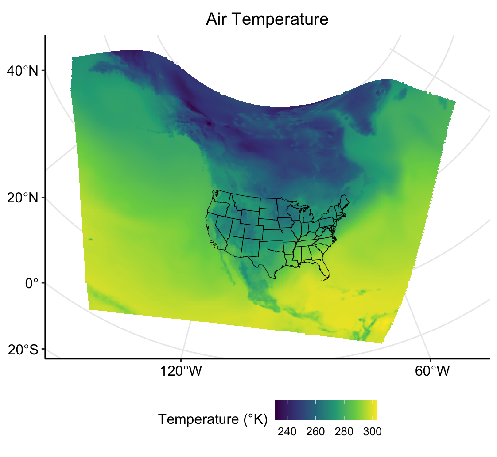
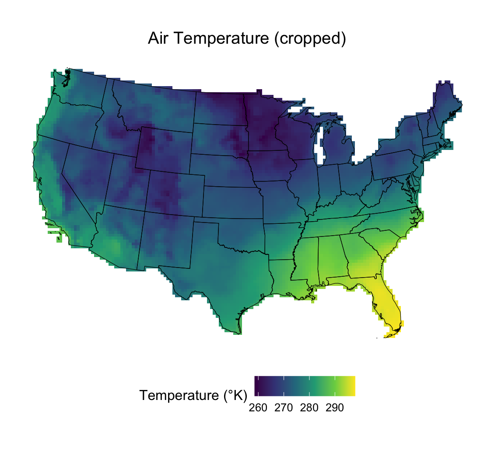
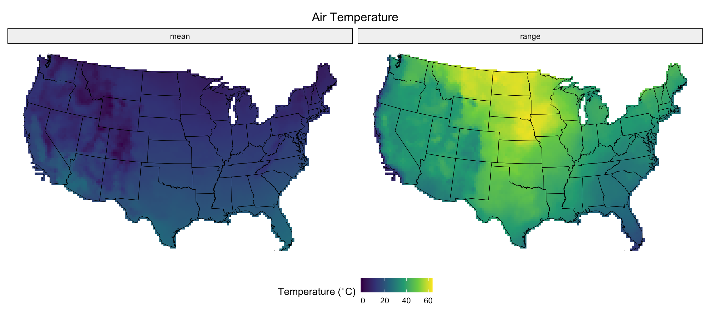
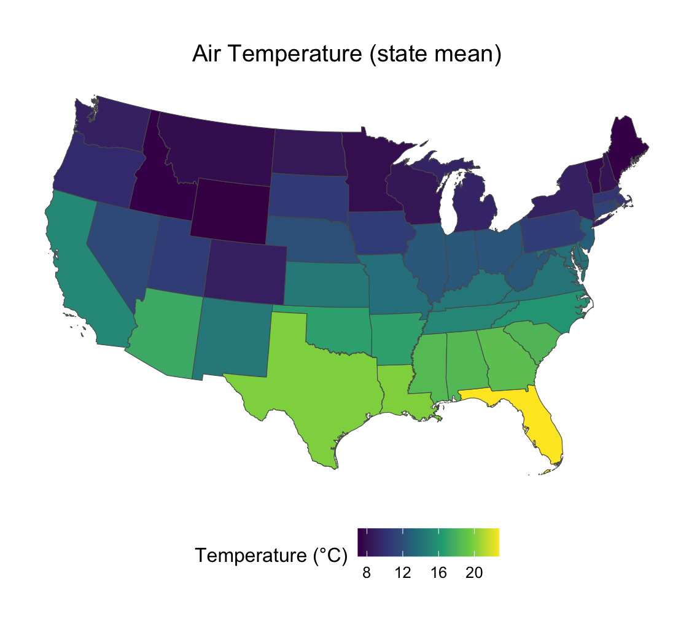
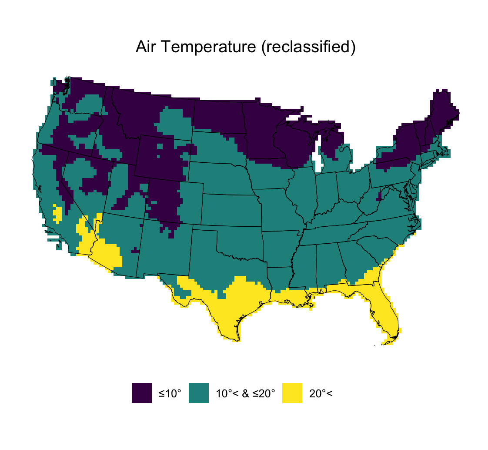

4 Raster Data
Raster Data Access, Preparation, and Exploratory Analysis in R
Date Modified: May 6, 2024
Authors: Mitchell Manware , Kyle P. Messier
Key Terms: Geospatial Data, Weather
Programming Language: R
4.1 Introduction
Air temperature data from the United States National Oceanic and Atmospheric Administration’s (NOAA) North American Regional Reanalysis (NARR) data set will be used to demonstrate using raster (grid) data with the terra package (9).
This tutorial will demonstrate the following steps with raster data in R:
- Downloading data from a URL
- Importing data
- Checking data type, structure, and class
- Reclassifying data
- Computing summary and zonal statistics
- Plotting individual and multiple data sets
The exploratory analyses in this unit are designed for educational purposes only. The results of the following analyses are not peer-reviewed findings, nor are they based on any hypotheses.
4.2 Access and Download
The website URL where the NOAA NARR exists is year-specific, meaning there is a unique URL for each annual data set. For the purpose of these exploratory analyses, air temperature data from the year 2021 will be used
Define the variable year according to the year of interest.
The utils::download.file() function downloads the file according to the defined URL and destination file.
# specify the URL where data is stored based on year variable of interest
url_narr <- paste0(
"https://downloads.psl.noaa.gov//Datasets/NARR/Dailies/monolevel/air.2m.",
year,
".nc"
)
# specify where to save downloaded data
destination_narr <- paste0(
"/ YOUR FILE PATH /narr_air2m_",
year,
".nc"
)
# download the data
download.file(
url_narr,
destination_narr
)Identify the desired data file with utils::list.files()
The file downloaded from NOAA’s NARR data set is an .nc, or netCDF, file. NetCDF files are common for raster data, and do not need to be unzipped.
4.3 Data Preparation
4.3.1 Import
Now that the data file of interest has been downloaded and identified, import the data with terra::rast().
4.3.2 Inspect Structure
Inspect the structure of narr to see its class, dimensions, variables, and layer names.
When working with raster data, the dimensions of the raster refer to the number of rows (nrow) and columns (ncol) of grid cells that make up the raster. Similarly, the number of layers in the raster object (nlyr) represents the number of observations of the data. These can also be inspected individually with nrow(), ncol(), and nlyr(), respectively.
4.3.3 Rename
The narr data set contains 365 layers, one for each daily observation of air temperature in 2021. When working with raster data that contains multiple layers, it is important to know and recognize the naming structure of each layer. In this case, the layer names are air_ followed by the day of the year (i.e., January 1 = air_1).
Renaming raster layers can be useful for calculating summary statistics or when combining rasters with potentially identical layer names. Using the time() and gsub() functions, the layers can be renamed according to their date.
Check the layer names again to ensure proper renaming.
4.3.4 Coordinate Reference System and Projection
Check the coordinate reference system of a SpatRaster object with terra::crs().
narr has a native coordinate reference system, but it is unnamed and was not identifiable by terra::rast(). The area of interest for these exploratory analyses is the conterminous United States, so we can project narr to the Albers Equal Area projected coordinate system (EPSG code: 5070).
We want to create plots with and analyze the air temperature data as it relates to the conterminous United States state boundaries. Subset states_t to remove Alaska, Hawaii, and the United States territories.
See the Polygon Data Chapter Section Plot (Multiple) for the steps for obtaining the states_t data set.
remove <- c(
"Alaska",
"Hawaii",
"Puerto Rico",
"United States Virgin Islands",
"Commonwealth of the Northern Mariana Islands",
"Guam",
"American Samoa"
)
conus_t <- subset(
states_t,
!states_t$NAME %in% remove
)Project conus_t to the Albers Equal Area projected coordinate system (EPSG code: 5070).
Ensure that both data sets have the same coordinate reference system.
4.4 Exploratory Analysis
4.4.1 Plot (Multiple)
Now that the data sets and coordinate reference systems have been prepared, create a plot with ggplot2::gglot(). Identifying the data sets to be plotted within the tidyterra::geom_spatraster() and tidyterra::geom_spatvector() argument informs the function that the narr and conus_t data sets are SpatRaster and SpatVector objects, respectively (10).
Only the first layer of the narr data set will be plotted.
ggplot() +
geom_spatraster(data = narr$air_20210101) +
scale_fill_continuous(
type = "viridis",
na.value = NA,
"Temperature (°K)"
) +
ggtitle("Air Temperature") +
geom_spatvector(
data = conus_t,
fill = "transparent",
color = "black"
) +
theme_pubr(legend = "bottom") +
theme(plot.title = element_text(hjust = 0.5)) +
grids()
4.4.2 Crop
The terra::crop() function can be used to reduce a SpatRaster to an area determined by SpatVector polygons. The mask = TRUE argument crops to the border of the polygons, whereas mask = FALSE crops to the bounding box surrounding the polygons. In this example, crop the narr data to the conterminous United States state boundaries.
Plot the cropped temperature data and the conterminous United States state boundaries.
Only the first layer of the narr data set will be plotted.
ggplot() +
geom_spatraster(data = narr_crop$air_20210101) +
scale_fill_continuous(
type = "viridis",
na.value = NA,
"Temperature (°K)"
) +
ggtitle("Air Temperature (cropped)") +
geom_spatvector(
data = conus_t,
fill = "transparent",
color = "black"
) +
theme_pubr(legend = "bottom") +
theme(
plot.title = element_text(hjust = 0.5),
axis.line = element_blank(),
axis.ticks = element_blank(),
axis.text = element_blank()
)
4.4.3 Units
The previous plot depicts the 2 m air temperature data in degrees Kelvin. To convert the units to degrees Celsius, simply subtract the values in narr_crop by 273.15. This subtraction will be applied to every grid cell within every layer of narr_crop.
4.4.4 Summary Statistics
Similar to mathematical operations, calculating summary statistics is very straight forward with raster data. For this example, calculate the annual mean 2m air temperature and range of 2m air temperatures at each grid cell, and save these as a new layer in narr_crop_c
Inspect the results of the mean and range calculations.
With the summary statistic layers prepared, create a plot with ggplot2::ggplot(). Identifying the data sets to be plotted within the tidyterra::geom_spatraster() and tidyterra::geom_spatvector() argument informs the function that the narr_crop_c and conus_t data sets are SpatRaster and SpatVector objects, respectively. Additionally, the facet_wrap(~lyr) argument creates a plot for each layer specified in geom_spatraster(data = narr_crop_c[[c("mean", "range")]]).
ggplot() +
geom_spatraster(data = narr_crop_c[[c("mean", "range")]]) +
scale_fill_continuous(
type = "viridis",
na.value = NA,
"Temperature (°C)"
) +
facet_wrap(~lyr) +
ggtitle("Air Temperature") +
geom_spatvector(
data = conus_t,
fill = "transparent",
color = "black"
) +
theme_pubr(legend = "bottom") +
theme(
plot.title = element_text(hjust = 0.5),
axis.line = element_blank(),
axis.ticks = element_blank(),
axis.text = element_blank()
)
4.4.5 Zonal Statistics
Looking closely at the previous plot, it is clear that the annual mean and range of temperatures differ between states. The terra package can be used to calculate zonal statistics of a SpatRaster object based on SpatVector polygons.
The terra::zonal() function can be used to calculate the average annual temperature in each state based on the annual grid cell temperatures stored in narr_crop_c$mean.
Plot the state-specific annual mean temperatures with ggplot2::ggplot(). Identifying the data set to be plotted within tidyterra::geom_spatvector() argument informs the function that the data is a SpatVector object.
ggplot() +
geom_spatvector(
data = conus_t,
aes(fill = MEAN)
) +
scale_fill_continuous(
type = "viridis",
na.value = NA,
"Temperature (°C)"
) +
ggtitle("Air Temperature (state mean)") +
theme_pubr(legend = "bottom") +
theme(
plot.title = element_text(hjust = 0.5),
axis.line = element_blank(),
axis.ticks = element_blank(),
axis.text = element_blank()
)
4.4.6 Reclassify
Raster data is most often continuous numeric data. Sometimes, however, it is important to classify the continuous numeric raster data into discrete classes. For this example, we will reclassify the annual mean temperature data into three discrete classes: <10°C, 10°C - 20°C, >20°C.
The first step in the reclassification process is to create a matrix storing the “from”, “to”, and “becomes” values. As the names imply, the “from” and “to” values identify the discrete ranges to be reclassified, and “becomes” is the new value that data within this range will take (i.e., “from” 0 “to” 5 “becomes” 1 means that values ranging from 0 to 5 will be reclassified as 1).
Create the reclassification matrix.
from <- c(
-Inf,
10,
20
)
to <- c(
10,
20,
Inf
)
becomes <- 1:3
reclass <- matrix(
c(
from,
to,
becomes
),
ncol = 3
)Now that the reclassification matrix has been prepared, reclassify the annual mean temperatures. The right = TRUE argument indicates that intervals are open on the left and closed on the right (i.e., (0,10] becomes 1).
Although narr_reclass contains the reclassified mean air temperature data, the data is still continuously numeric. The following chunk of code converts the narr_reclass$mean layer from numeric to character based on the defined levels.
narr_reclass contains the reclassified mean air temperature data, but the data is still numeric. The terra::set.cats() function assigns categories to numeric data based on values stored in a data frame.
level_values <- data.frame(
c(1:3),
c("1", "2", "3")
)
colnames(level_values) <- c("mean_continuous", "mean_discrete")
set.cats(narr_reclass,
layer = "mean",
value = level_values
)Plot the discretely reclassified mean temperature data.
ggplot() +
geom_spatraster(data = narr_reclass$mean_discrete) +
scale_fill_viridis_d("",
labels = c(
"≤10°",
"10°< & ≤20°",
"20°<",
""
),
na.value = NA
) +
ggtitle("Air Temperature (reclassified)") +
geom_spatvector(
data = conus_t,
fill = "transparent",
color = "black"
) +
theme_pubr(legend = "bottom") +
theme(
plot.title = element_text(hjust = 0.5),
axis.line = element_blank(),
axis.ticks = element_blank(),
axis.text = element_blank()
)